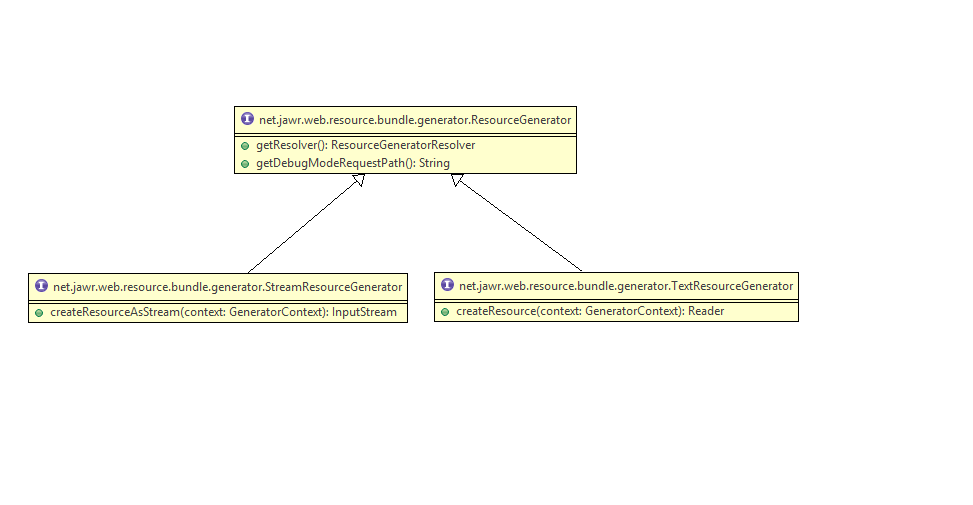

Jawr Generators
In some cases it is convenient to generate scripts, CSS or images dynamically. For instance, Jawr will create certain scripts to, say, copy i18n messages from a ResourceBundle over to a special script. You may need to retrieve some data from a database and create parameters that scripts will need, or simply grab parameters from a configuration file and pass them over to the scripting context. For any case where you may need to generate content you can implement a Resource Generator and register it in Jawr to suit your needs.
Note that a Resource Generator is not a script servlet: it will be only invoked once during application startup to build the bundles in Production mode. The result of this invocation will be added to whichever bundle you decide and reused until the next redeployment. The point is to be able to generate some script dynamically but still to be able to minify it and add it to your bundles. A perfect example is the DWR generator: all DWR script interfaces are created from java classes once during startup but they can be minified and bundled together. In debug mode, it will be called as any resource if needed.
Using a generator
Generators are mapped to bundles using a GeneratorResolver. This resolver is used to determine if a resource is a generated resource or not. Prior to the 3.5 version, users were only able to use a prefix to map resources to a generator. Since the 3.5 version, users can define their own resolver. There are 2 built-in types of resolver :
- net.jawr.web.resource.bundle.generator.resolver.PrefixedPathResolver : For prefix path resolver
- net.jawr.web.resource.bundle.generator.resolver.SuffixedPathResolver : For suffix path resolver
Example of prefixed path generator :
prefix:path(params)[params]
The prefix is a key you will specify when implementing the Generator, and the path is a string which will have different meaning depending on your generator's functionality. Also, you have params in parentheses and in brackets (both of which are optional), that further help in parameterizing the mappings. A simple mapping example, with no params, is as follows:
jawr.js.bundle.one.mappings=jar:net/jawr/cpscript.js
In this case we are using the already existing classpath script generator, which reads a script from the classpath, as opposed to reading it from the web application dir structure. So the path in this case is the classpath where the script will be found. The prefix is 'jar', which lets Jawr know that this path must be resolved using the classpath generator.
This is an example in which the mapping uses two different parameters:
jawr.js.bundle.one.mappings=messages:com.myapp.messages(mynamespace)[javascript.messages]
Note that if you use the parameters, the order must always be parentheses first, brackets last. If you need only one parameter, you can omit the brackets param.
i18n messages script generator
- Prefix: message
This generator generates javascript code with locale specific variants which are loaded depending on the user's specific language. Full documentation is here.
DWR scripts generator:
- Prefix: dwr
This generator allows you to bundle and compress together DWR generated interfaces, plus all the utility scripts required by them. Full documentation is here.
Commons Validator generator
- Prefix: acv
This one will let you generate compressed and cacheable versions of the validation scripts generated in Struts by the Apache Commons Validator taglib. Full docs here.
classpath resource generator
- Prefix: jar
It allows you to include resources present within jar files or simply located anywhere in the application classpath. You will need to use different prefixes if you are generating js or css files. To add javascript resources from the classpath you use jar: as the prefix, followed by the path to the resource using / as separator:
jawr.js.bundle.foo.id=/bundles/fooBundle.js
# Map to a script in the com.mycompany.myapp package and to another from the WAR
jawr.js.bundle.foo.mappings=jar:/com/mycompany/myapp/foo.js, /js/bar.js
Note the leading slash in the mapping, which is also required. You can of course combine this kind of mappings with regular ones, so you can bundle together resources from the WAR and from the classpath.
If you need to load CSS files from the classpath, you would use the exact same syntax jar:. Note that you could also use jar_css:, but this prefix is deprecated since Jawr 2.8.
jawr.css.bundle.styles.mappings=jar:/com/mycompany/myapp/stylesheet.css, /css/bar.css
CSS files loaded from the classpath may refer to images which will normally be available from the classpath as well. Since version 2.8 Jawr can serve such image files by defining an extra instance of the servlet with its init param type set to img. You can find details on how to set it up at the servlet configuration page.
Unlike the normal mapping, this way of referring to resources does not yet allow wildcards (i.e.: jar:/com/mycompany/myapp/** would not work).
Less CSS generator
- Suffix: .less
This one will handle LESS CSS resources to compile them to plain CSS resources
jawr.css.bundle.styles.mappings=/css/foo.less,/css/bar.less
- Configuration properties
Jawr provides properties to configure the Less CSS generator.
Property name Purpose Default value jawr.css.less.generator.less.script.location The less script location net/jawr/web/resource/bundle/generator/css/less/less.js jawr.css.less.generator.engine.script.location The less engine script location net/jawr/web/resource/bundle/generator/css/less/engine.js jawr.css.less.generator.browser.script.location The less browser script location net/jawr/web/resource/bundle/generator/css/less/browser.js
CofeeScript generator
- Suffix: .coffee
This one will handle coffeeScript resources to compile them to plain JS resources
jawr.js.bundle.myScript.mappings=/js/foo.coffee,/js/bar.coffee
- Configuration properties
Jawr provides properties to configure the CoffeeScript generator.
Property name Purpose Default value jawr.js.generator.coffee.script.options The coffee script compiler options (Please see : http://coffeescript.org/) None jawr.js.generator.coffee.script.location The coffee script location net/jawr/web/resource/bundle/generator/js/coffee/coffee-script.js
Skin generator
- Prefix: skin
This one will help you to define CSS skin in your bundles. Full docs here.
Skin swicther generator
- Prefix: skinSwitcher
This one will generates the JS content for CSS skin switcher. To use it you must configure your Jawr configuration file like this :
jawr.js.bundle.common.id=/js/common.js jawr.js.bundle.common.mappings=skinSwitcher:switcher.js
When you use the Jawr style tag for a bundle containing different CSS skin, you can force Jawr to render the links to the alternate CSS skin by using the displayAlternate property.
<jwr:style src="/css/skinnedBundle.css" displayAlternate="true" media="all" />
This will force Jawr to render the links to all the skin associated to /css/skinnedBundle.css. This generator will generates the script to switch from a skin to another by calling the following JS function and passing as parameter the name of the style to switch to:
JAWR.skin.switchToStyle(newStyle);
You can find an example of it's use in the basic webapplication sample. For more information about CSS skin, you can take a look to the following documentation.
Implementing a generator
You will find below the class diagram for generators.
The root interface for resource generator is :
- net.jawr.web.resource.bundle.generator.ResourceGenerator. All resource generator must implement a method, which defines the mapping for this generator.
/** * Returns the resource generator resolver * * @return the resource generator resolver */ public ResourceGeneratorResolver getResolver();The getResolver() method returns the resolver, which will be used when mapping you generator to bundles. Jawr will recognize if a resource is handled by a Generator using the resolver, and use your generator when it applies. So, if your resolver is a PrefixResolver, which handle all resources beginning with 'foo:', you would map your generator like this:
jawr.js.bundle.one.mappings=foo:somePath
There are 2 main types of generator:
- net.jawr.web.resource.bundle.generator.TextResourceGenerator, which is the generator for the text resources (JS and CSS).
- net.jawr.web.resource.bundle.generator.StreamResourceGenerator, which is the generator for the image resources.
- Implementing a CSS or a JS generator
A JS or a CSS generator is an implementation of the interface net.jawr.web.resource.bundle.generator.TextResourceGenerator. This is a simple interface which exposes two methods:
- public Reader createResource(GeneratorContext context);
- public String getDebugModeRequestPath();
The getDebugModeRequestPath simply returns a path to be used in debug mode. This is simply a fake script or CSS name and it really has no importance unless you are mapping the Jawr servlet to a suffix different from *.css or .js. 99% of the use cases don't need to care about this so you can simply return one of three constants: ResourceGenerator.JAVASCRIPT_DEBUGPATH, ResourceGenerator.CSS_DEBUGPATH or ResourceGenerator.IMG_DEBUGPATH:
public String getDebugModeRequestPath() { return ResourceGenerator.JAVASCRIPT_DEBUGPATH; }Finally, the createResource() method is where the actual generation takes place. This method takes a single parameter of type GeneratorContext, which contains all the information you need to build a dynamic script or CSS. The useful methods are:
- getPath(): this contains the mapping, without the prefix and parameters. For instance, in a mapping of the form 'prefix:thePath(param)', this method returns 'thePath'.
- getConfig(): returns the JawrConfig object used throughout the application. It contains data about the Jawr configuration, such as wether debug mode is on or off, the current servlet mapping, and so on.
- getCharset(): returns the current charset, which the returned script or CSS must conform to.
- getServletContext(): returns the application's ServletContext.
- getParenthesesParam(): returns the params in parentheses, if any were declared. For instance, in a mapping such as 'foo:path(aParam)', this would return 'aParam'.
- getBracketsParam(): returns the params in brackets, if any were declared. For instance, in a mapping such as 'foo:path(aParam)[anotherParam], this would return 'anotherParam'.
Using this information, you should be able to generate a script or CSS and return in in the form of a Reader object (typically a StringReader is sufficient for the task).
- Implementing an Image resource generator
An image generator is an implementation of the interface net.jawr.web.resource.bundle.generator.StreamResourceGenerator. This is a simple interface which exposes one method:
- public InputStream createResourceAsStream(GeneratorContext context);
Mapping a generator
Once you have your Generator implemented, you need to register into Jawr in order to use it. This is simply a matter of mapping its classname in the configuration properties file under the key 'jawr.custom.generators'. If there is more than one, you simply declare them separated by commas:
jawr.custom.generators=com.mycompany.myapp.MyCustomGeneratorImplementation,com.mycompany.myapp.AnotherGenerator
A simple example: an alert message generator
Here is a sample class which you can use to get started. It simply creates a script that displays an alert message with whichever text is used as the path in the mapping:
package net.jawr.example;
public class TestGenerator implements TextResourceGenerator {
private ResourceGeneratorResolver resolver;
public class TestGenerator(){
resolver = new PrefixedPathResolver("example");
}
public Reader createResource(GeneratorContext context) {
return new StringReader(";alert('Mapping contained:" + context.getPath() + "');");
}
public ResourceGeneratorResolver getResolver() {
return resolver;
}
public String getDebugModeRequestPath() {
return ResourceGenerator.JAVASCRIPT_DEBUGPATH;
}
}
With this class in hand, we first register it in our properties config file:
jawr.custom.generators=net.jawr.example.TestGenerator
And now it's a matter of creating a bundle and use the generator:
jawr.js.bundle.global.id=/bundles/global.js
jawr.js.bundle.global.mappings=example:Hello World!,example:And Hello Again!
And that's it, now add the bundle to any page and when it's loaded, you should get an alert box with the text 'Mapping contained:Hello World!' followed by a second alert box with the text 'Mapping contained:And Hello Again!'.
Security issues with generator
If you develop your own generator, which reads content from resources on your server, you must take care of prevent users to access unauthorized resources. You must check if the requested resource is an allowed one or not. For example, the user must not be able to retrieve the files located under /WEB-INF/ or /META-INF/ in your web application, or directly the content of the JSP files.
To check if your generator is sensible to this issue, you must launch your application in debug mode, and then try to reach your resource using the following URL:
http://localhost:8080/myWebAppContext/sample.js?generationConfigParam=myGen:/WEB-INF/web.xml
In this example, myGen is the prefix of the generator. So you must replace it by the prefix of your generator. If you are able to see the content of the web.xml file, this means that you need to change your generator to fix this issue.